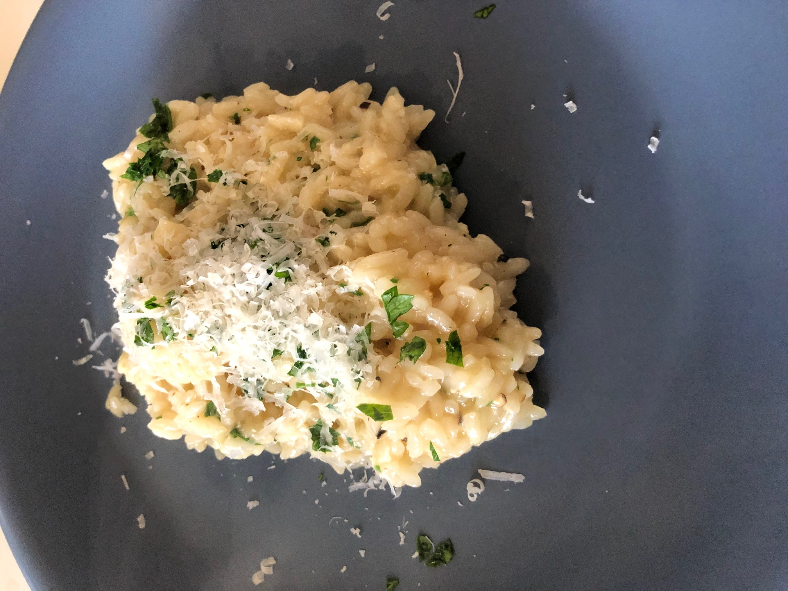

Rob's Risotto Recipe
Ingredients:
- 1 1/2 Cups of Arborio Rice
- 1/2 Cup Grated Parmigiano-Reggiano Cheese
- 6 Cups of Chicken Broth
- 1/4 Cup of Finely Chopped Shallot
- 2 Tablespoons of Olive Oil (or butter)
- 2 Cloves of Finely Chopped Garlic
- 1/2 Cup of White Wine
- Handful of Chopped Italian Parsley (for garnish)
- Salt and Pepper to Taste
Steps:
- Heat olive oil in saute pan on medium-low.
- At the same time, in a different pot, bring chicken broth to a near boil.
- Pour in shallots and garlic into saute pan and saute for a few minutes until fragrant.
- Mix in dry Arborio Rice and 'toast' rice for about 3 minutes, stirring frequently.
- Mix in white wine and allow it to reduce, about 3-5 minutes until it halves in volume.
- Turn heat up to medium-high and pour in 1 cup of chicken broth and stir continuously until broth evaporates.
- Once broth evaporate, pour in more chicken broth just enough to cover the rice, stir continuously until it evaporates.
- Repeat the above step until rice grain turns opaque, about 20 minutes or so and validate by tasting a rice grain - the texture should be cooked but have a light firmness to it.
- Turn off heat and mix in Parmigiano-Reggiano cheese.
- Garnish with more cheese and chopped Italian Parsley.

Finished and plated dish.